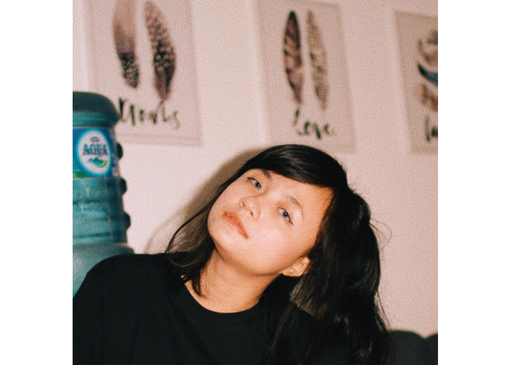
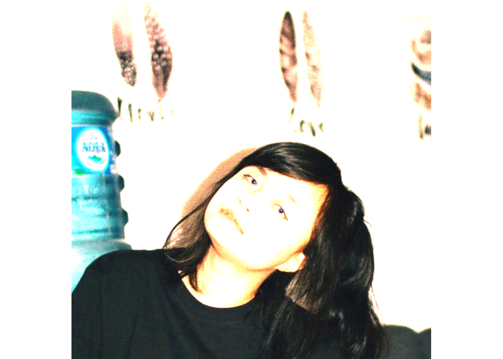

EBImage menyediakan fungsi dan tujuan umum untuk pemrosesan dan analisis gambar. Dalam konteks pengujian seluler berbasis mikroskop (high-throughput), EBImage menawarkan alat untuk menyegmentasikan sel dan mengekstrak deskriptor seluler kuantitatif. Hal ini memungkinkan otomatisasi tugas tersebut menggunakan bahasa pemrograman R dan memfasilitasi penggunaan alat lain di lingkungan R untuk pemrosesan sinyal, pemodelan statistik, pembelajaran mesin, dan visualisasi dengan data gambar.
sebelum memproses sebuah gambar menggunakan EBImage kita perlu terlebih dahulu mengimpor library dari EBImage,berikut kode programnya
library(EBImage)untuk mengimpor data berupa gambar,berikut kode programnya
Image <- readImage('cynantia.jpg')
display(Image)
gambar diatas merupakan hasil keluaran dari display(Image)
bagaimana cara untuk menampilkan detail dari sebuah gambar? mudah saja kita tinggal memasukkan kode program print(Image).kode program ini akan menampilkan detail properti dari sebuah gambar yang sebelumnya kita impor.berikut pengaplikasiannya
print(Image)## Image
## colorMode : Color
## storage.mode : double
## dim : 817 816 3
## frames.total : 3
## frames.render: 1
##
## imageData(object)[1:5,1:6,1]
## [,1] [,2] [,3] [,4] [,5] [,6]
## [1,] 0.9215686 0.9019608 0.8901961 0.8823529 0.8549020 0.8274510
## [2,] 0.8352941 0.8274510 0.8313725 0.8470588 0.8470588 0.8352941
## [3,] 0.8313725 0.8196078 0.8274510 0.8470588 0.8431373 0.8274510
## [4,] 0.8588235 0.8470588 0.8549020 0.8745098 0.8705882 0.8509804
## [5,] 0.8509804 0.8352941 0.8470588 0.8784314 0.8901961 0.8784314Bagaimana cara menampilkan histogram pada gambar?mudah saja kita tinggal memasukkan kode program hist(Image)
hist(Image)Disini kita akan melakukan manipulasi gambar dengan menambahkan dan mengurangi sedikit kecerahan pada gambar.kecerahan dapat dimanipulasi menggunakan (+) atau (-)
Image1 <- Image + 0.2
Image2 <- Image - 0.2display(Image1)gambar diatas adalah merupakan hasil manipulasi dengan menambahkan nilai brightness sebesar 0.2 yang merupakan keluaran dari display(Image1)
display(Image2)gambar diatas ini adalah merupakan hasil manipulasi dengan mengurangi nilai brightness sebesar 0.2 yang merupakan keluaran dari display(Image2)
Disini kita akan melakukan manipulasi gambar dengan mengatur kontras nya.kontras dapat dimanipulasi menggunakan operator (*)
Image1 <- Image * 0.5
Image2 <- Image * 2display(Image1)Gambar diatas merupakan hasil manipulasi gambar dengan mengatur nilai kontras sebesar 0.5 yang merupakan keluaran dari display(Image1)
display(Image2)
Gambar diatas merupakan hasil manipulasi gambar dengan mengatur nilai kontras sebesar 2 yang merupakan keluaran dari display(Image2)
Disini kita akan melakukan manipulasi gambar dengan mengatur gamma.pengaturan gamma dapat dimanipulasi menggunakan operator(^)
Image1 <- Image ^ 2
Image2 <- Image ^ 0.7display(Image1)Gambar diatas merupakan hasil manipulasi gambar dengan mengatur nilai gamma nya sebesar 2 yang merupakan hasil keluaran display(Image1)
display(Image2)Gambar diatas merupakan hasil manipulasi gambar dengan mengatur nilai gamma nya sebesar 1.75 yang merupakan hasil keluaran display(Image1)
Disini kita akan melakukan transformasi pada gambar dengan memutar posisi gambar 45 derajat.
Imagetr <- translate(rotate(Image, 45), c(50, 0))
display(Imagetr)Karena array piksel memiliki tiga sumbu dalam dimensinya, misalnya dalam kasus kita adalah 1984 x 1488 x 3. Sumbu ketiga adalah slot untuk tiga saluran: Merah, Hijau dan Biru, atau RGB. Oleh karena itu, mengubah color.mode dari Color ke Grayscale, berarti memisahkan tiga saluran dari bingkai yang dirender tunggal (tiga saluran untuk setiap piksel) menjadi tiga larik piksel terpisah untuk bingkai merah, hijau, dan biru.
colorMode(Image) <- Grayscale
print(Image)## Image
## colorMode : Grayscale
## storage.mode : double
## dim : 817 816 3
## frames.total : 3
## frames.render: 3
##
## imageData(object)[1:5,1:6,1]
## [,1] [,2] [,3] [,4] [,5] [,6]
## [1,] 0.9215686 0.9019608 0.8901961 0.8823529 0.8549020 0.8274510
## [2,] 0.8352941 0.8274510 0.8313725 0.8470588 0.8470588 0.8352941
## [3,] 0.8313725 0.8196078 0.8274510 0.8470588 0.8431373 0.8274510
## [4,] 0.8588235 0.8470588 0.8549020 0.8745098 0.8705882 0.8509804
## [5,] 0.8509804 0.8352941 0.8470588 0.8784314 0.8901961 0.8784314Gambar dibawah ini merupakan hasil proses manajemen warna yang sebelumnya menggunakan warna (Merah,hijau dan biru) dirubah menjadi warna grayscale.
display(Image)## Only the first frame of the image stack is displayed.
## To display all frames use 'all = TRUE'.Pada bagian ini kita akan melakukan smoothing / blurring menggunakan low-pass filter, dan deteksi tepi menggunakan high-pass filter.
colorMode(Image)<- ColorfLow <- makeBrush(21, shape= 'disc', step=FALSE)^2
fLow <- fLow/sum(fLow)
Image.fLow <- filter2(Image, fLow)
display(Image.fLow)fHigh <- matrix(1, nc = 3, nr = 3)
fHigh[2, 2] <- -8
Image.fHigh <- filter2(Image, fHigh)
display(Image.fHigh)